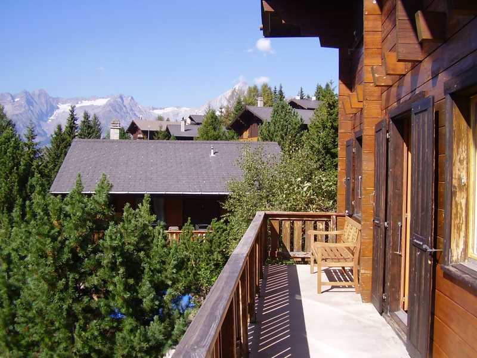
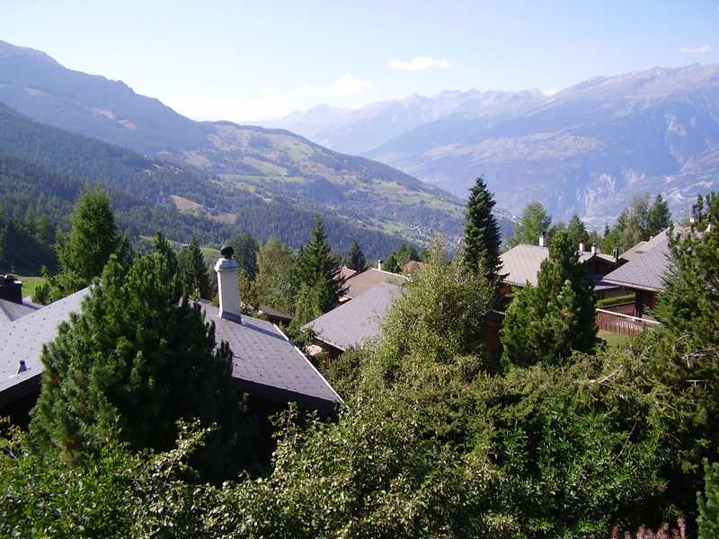
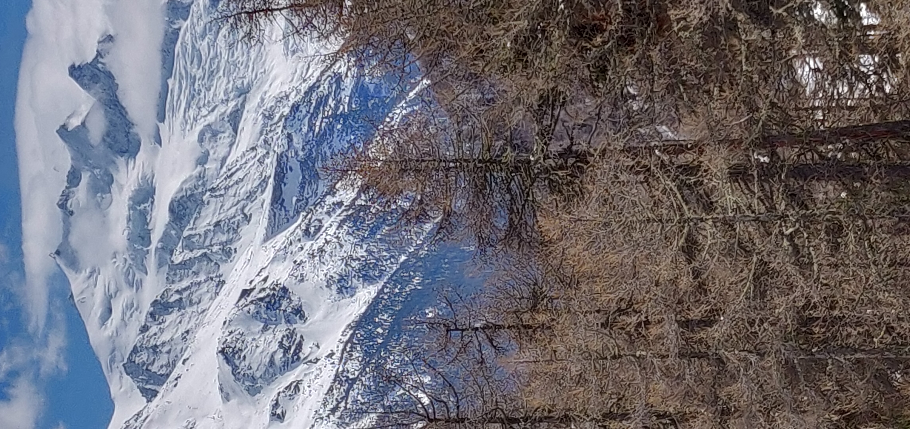
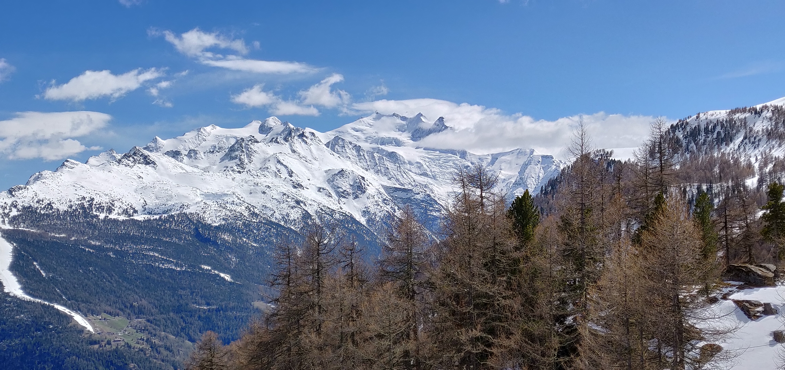
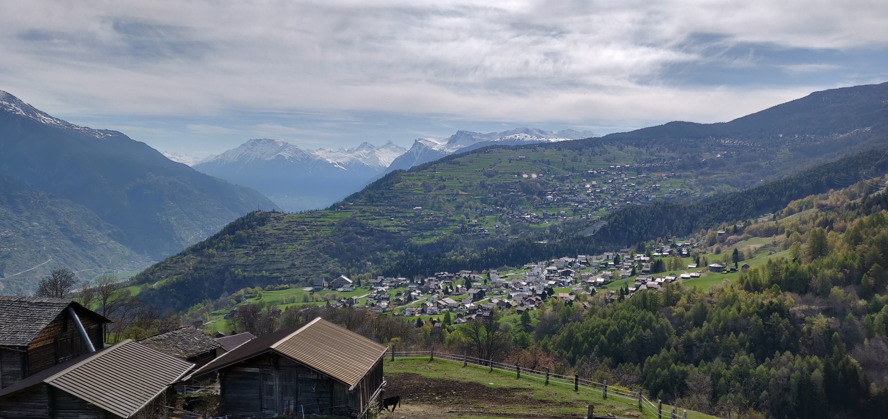

De pittoreske stad Lausanne ligt aan de oevers van het meer van Genève en is de onofficiële hoofdstad van de Zwitserse Rivièra.
Er worden heel wat boottochtjes en andere leuke activiteiten op het water georganiseerd.
Je zal in de omgeving ook verschillende wijngaarden en kaasboerderijen spotten.
Ook de stad zelf heeft heel wat te bieden. Je kan er slenteren door de prachtige straten,
iets lekker eten of een bezoekje brengen aan het Olympisch Museum, het prachtige Museum van Schone Kunsten of het Musée de l’Élysée.
In dat laatste museum kan je een knappe verzameling foto's bewonderen die genomen werden door Charlie Chaplin.
Verder is ook de twaalfde-eeuwse kathedraal de moeite.




